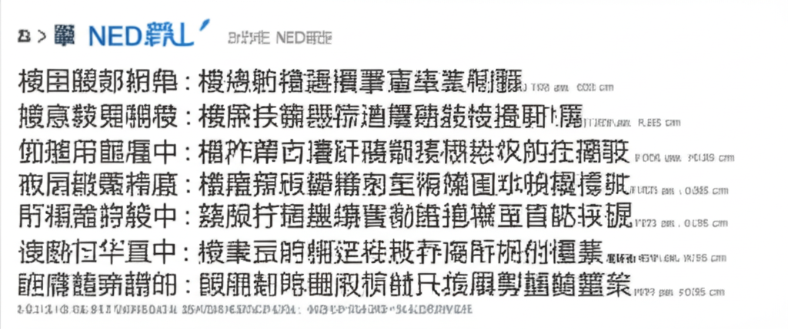

# 健康資訊精選：體重管理、健康生活與最新醫學趨勢
## 引言
今日的健康資訊涵蓋了體重管理、健康生活方式以及最新的醫學趨勢。從台灣成人過重肥胖比例的統計，到新型腸泌素在糖尿病與肥胖治療上的應用，再到史丹佛大學發現的「天然減肥分子」，我們將深入探討如何更有效地管理體重，維持健康的生活。同時，我們也將關注一些常見的健康誤區，例如內臟脂肪對心血管的影響，以及體重管理科普的新途徑。
## 主體內容
### 第一點：體重管理與肥胖現狀
根據早安健康的報導，台灣成人過重與肥胖的比例高達50.3%，這是一個值得關注的健康議題。Novo Nordisk A/S 正與平安健康合作，建立肥胖症科普專區，推動全民健康體重管理水平的提升。體重管理不僅關乎外觀，更與糖尿病、心血管疾病等慢性病密切相關。
### 第二點：新型腸泌素與糖尿病的治療
健康醫療網與中華日報報導了新型腸泌素在改善糖尿病和肥胖問題上的應用。台灣糖尿病盛行率高，許多第二型糖尿病患者同時面臨肥胖問題，稱為「糖胖症」。新型腸泌素有助於擺脫「糖胖惡性循環」，同時需要注意飲食，兼顧血糖和體重控制。
### 第三點：最新研究與健康觀念
史丹佛大學最新研究發現一種「天然減肥分子」BRP，可能在減肥領域帶來新的突破。同時，Yahoo新聞提醒大眾，不要以為瘦就不會高血壓，「內臟脂肪」對心血管的危害更大。因此，除了關注體重，更要重視體脂率和內臟脂肪的控制。
## 結論
體重管理是維持健康生活的重要一環。透過均衡飲食、規律運動，以及了解最新的醫學資訊，我們可以更有效地控制體重，預防相關疾病。同時，要避免健康誤區，關注內臟脂肪等隱藏的健康風險。讓我們一起努力，追求更健康的生活。